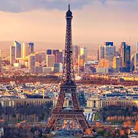

Paris
Paris (nicknamed the "City of light") is the capital city of France, and the largest city in France. The area is 105 square kilometres (41 square miles), and around 2.15 million people live there. If suburbs are counted, the population of the Paris area rises to 10.7 million people. It is the most densely populated city in the European Union, with 20.653 people per square kilometer.
The city has a multi-cultural style, because 19% of the people there are from outside France.[3] There are many different restaurants with all kinds of food. Paris also has some types of pollution like air pollution and light pollution.